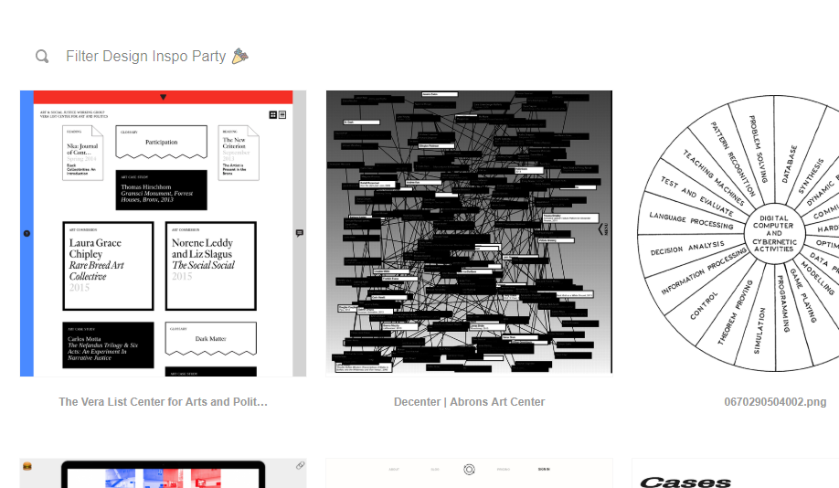
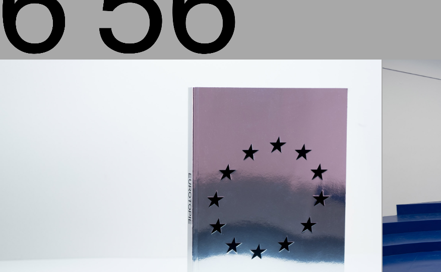
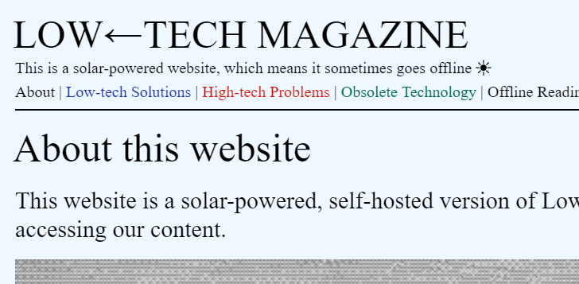
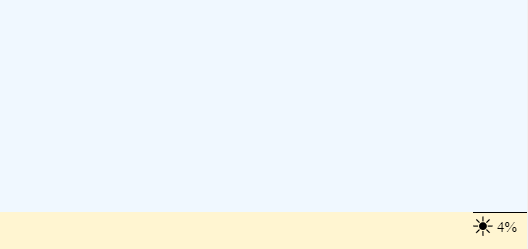
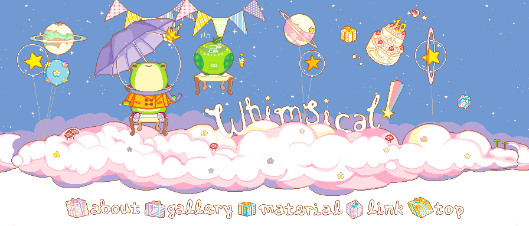

findings - week of 16.6.2019
I didn't post last week for two reasons, one was that I was busy and the other was that I didn't take as much time looking for stuff as I usually do. This week, however, I spent a ton of time researching and tracking down old, rare music, particularly music from konami's bemani series of games. I could talk about this side-project for hours, but this post isn't about that. the point is that on my way to find music, I got sidetracked a lot. anyway, here are the results of this week's sidetracks:
number one: juliana castro's design inspo party.
this is actually an are.na block that's a goldmine of cool design inspiration. I haven't actually been through all of these but they look cool and the ones I have looked through are all really interesting. this is a really useful block!!
I'll probably be looking through it for weeks, if not months. if not forever.
number two: 6m56s on artpapereditions.
I'll be honest, I don't really know what the purpose of this page is. it appears to be some kind of preview for an artbook or something. really, I saw one particular interaction used on the page and sort of didn't look any further.

the image being shown changes based on the cursor's x-position within the parent container. pretty cool interaction, and works really well for simulating flipping through a book like here!
number three: marie otsuka's gradient cursor.
this is the personal site of marie otsuka, a genius web designer. there's not much to it, but it is cool. the way it works is that there's an element that follows the cursor around, and within that element there's a gradient going from red to green to blue with it's blend mode set to screen.

fun to look at!
number four: LOW←TECH MAGAZINE.
I think the title is meant to be in all caps.
this one is a website comepletely run on a solar-powered computer. that alone is incredible, but the amount of work that goes into making what's essentially a solar-powered web server is mind-blowing. this interview with the creator of the website, kris de decker, goes into a lot of interesting detail about how the website works. check it out!
the main site even has this little battery meter to show how much solar power is left. it was pretty low when I wrote this (04:30 utc+5)!
number five: whimsical!.
and now for something a little different a site dedicated to a certain type of art — whimsical!. this one is mainly important to me because I used to be obsessed with sozai when I was younger. sozai — as they're presented here — take the form of cute animated pixel art. I'm honestly so happy to see that this particular site has actually been updated relatively recently, because many of the popular sozai sites just don't exist anymore. sozai pixel art is kind of unheard of in mainstream web design these days, especially since everyone has this weird urge to look like everyone else. back when it was cool and novel to just have like, your own custom little web page or blog or something — just for fun — sozai were indespensable for people like me. I guess people still use the stuff in places like tumblr, though.
makes me nostalgic. and also kind of sad that I look at these resources these days and can't for the life of me think of something to do with them.
I'll be looking for more stuff this week. thanks for reading! I hope this stuff is as useful to you as it is to me. or at least I hope you thought it was cool. if you did, feel free to join my discord. I'm online probably around twenty
hours at a time (healthy, I know), so we can talk about stuff whenever! I'm always eager to hear about stuff you've found or created, too!
currently listening to Moonbow (which the artist described as "scottishcore" btw) by a_hisa & Hyuji and Four to Six by Math the Band